清風高校 生物部へようこそ
自然と生き物を愛する高校生の活動紹介

自然と生き物を愛する高校生の活動紹介
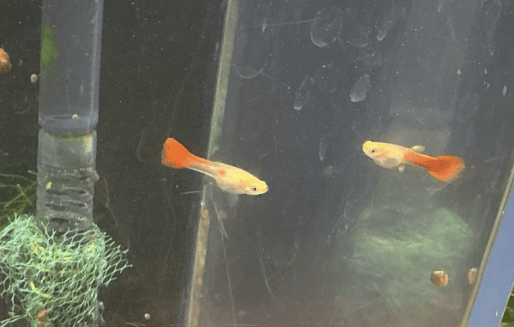
条鰭綱・カダヤシ目・カダヤシ科 — カラフルな体と大きな尾びれが特徴の小さな熱帯魚。オスとメスで見た目が異なります。
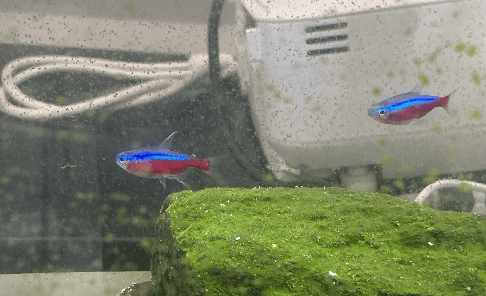
条鰭綱・カラシン目・カラシン科 — 青と赤のラインが特徴的な小さな熱帯魚。群れで泳ぐ姿が美しいです。
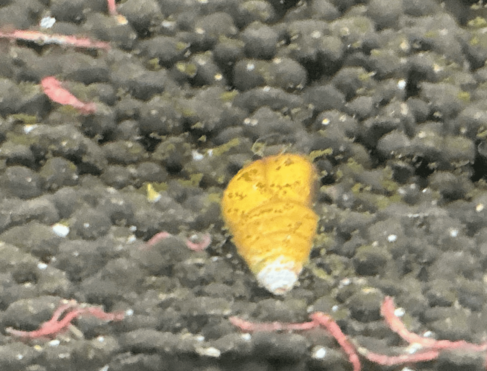
腹足綱・カワニナ目・カワニナ科 — 川や水路にすむ巻貝。藻などを食べて生活します。
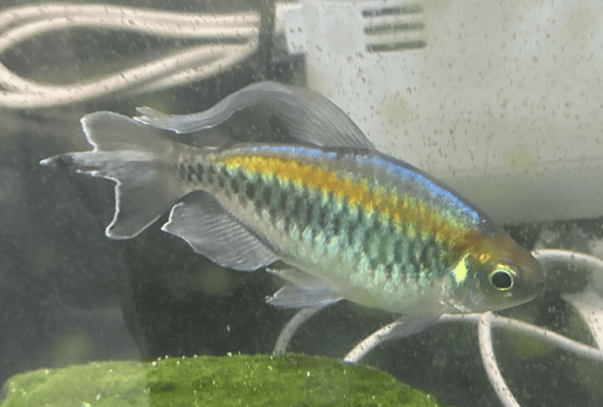
条鰭綱・ナマズ目・ロリカリア科 — 白っぽい体と口元のヒゲが特徴。水槽の壁にくっついてコケを食べます。
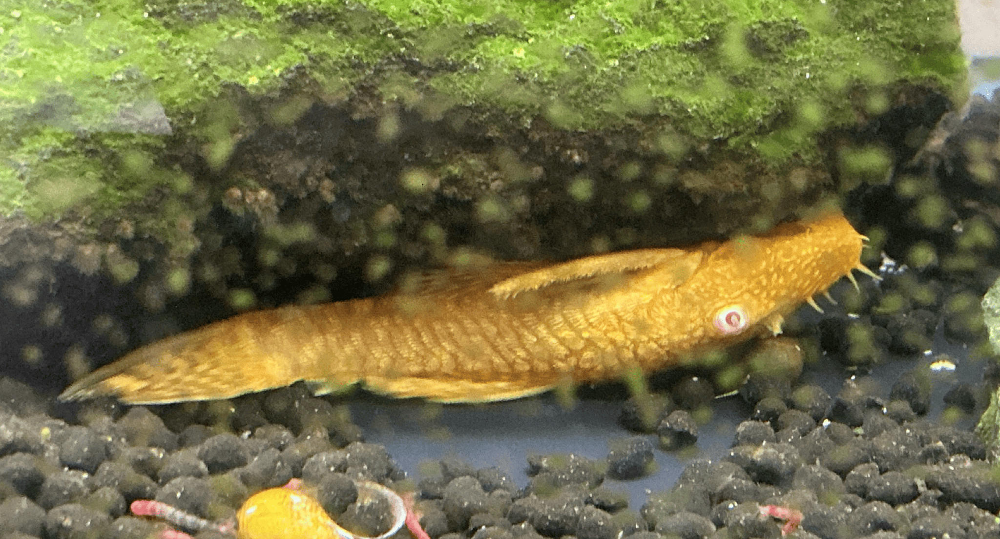
条鰭綱・カラシン目・アレステス科 — 青やオレンジの美しい色とキラキラした体が特徴。群れで泳ぐと華やかです。
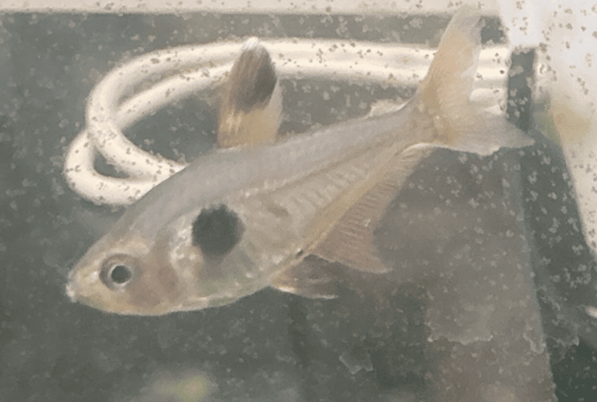
条鰭綱・カラシン目・カラシン科 — 茶色っぽい体に黒い模様があり、落ち着いた色合いが魅力です。
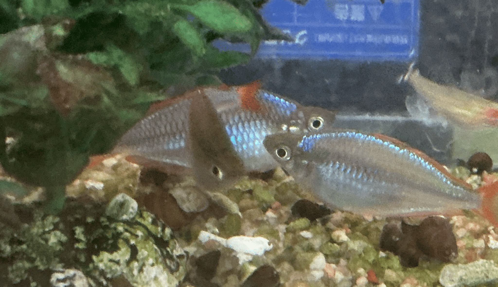
条鰭綱・トウゴロウイワシ目・メラノタエニア科 — 青や黄色に輝く美しい小型の熱帯魚。オスは色鮮やかです。

爬虫綱・有鱗目・トカゲモドキ科 — 黄色や茶色の斑点があるヤモリの仲間。おとなしく太いしっぽに栄養を蓄えます。
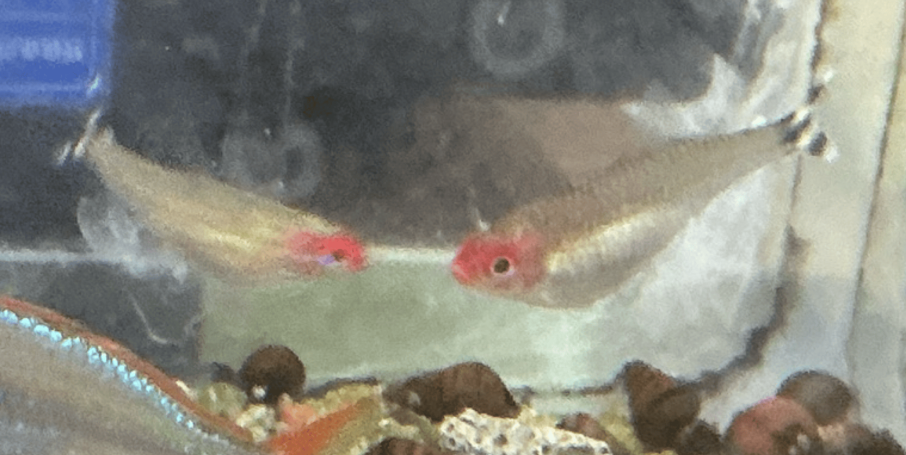
条鰭綱・カラシン目・カラシン科 — 頭部が赤く、銀色の輝きがある小型魚。群れで泳ぐと美しいです。
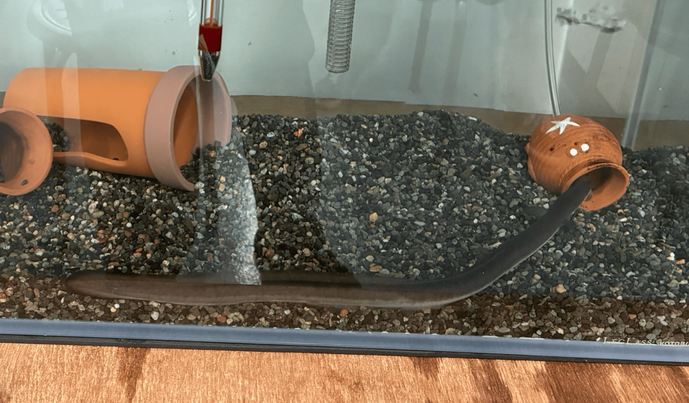
条鰭綱・ウナギ目・ウナギ科 — 細長い体とぬるぬるした皮膚が特徴。川で成長し産卵のため海へ移動します。
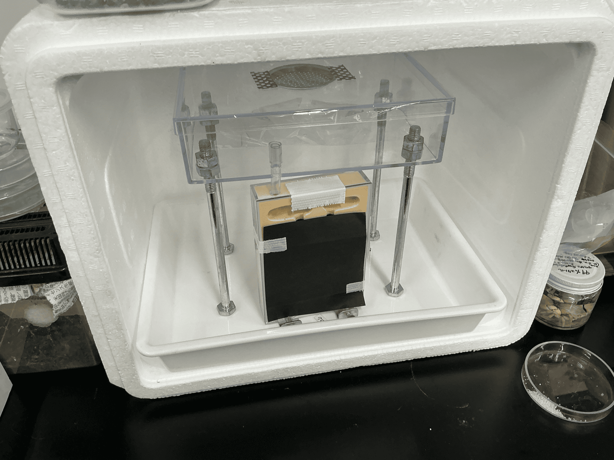
昆虫綱・ハチ目・アリ科 — 集団で協力して生活する小さな昆虫。種類によって行動や体の大きさが異なります。
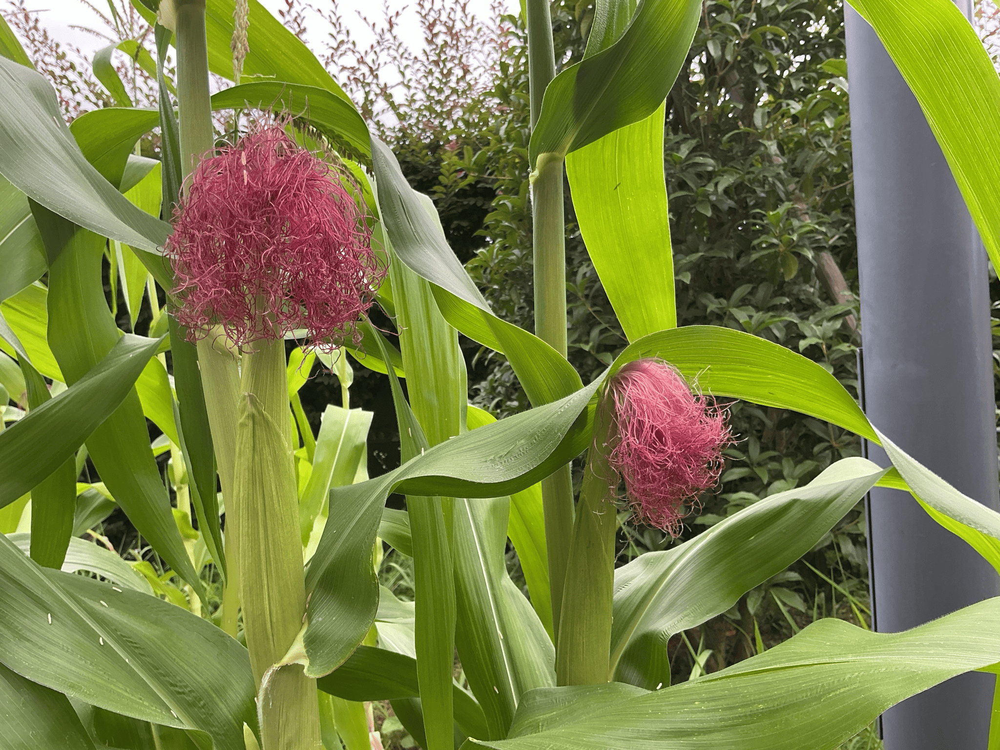
イネ目・イネ科・トウモロコシ属 — 爆裂種で加熱するとポップコーンになります。
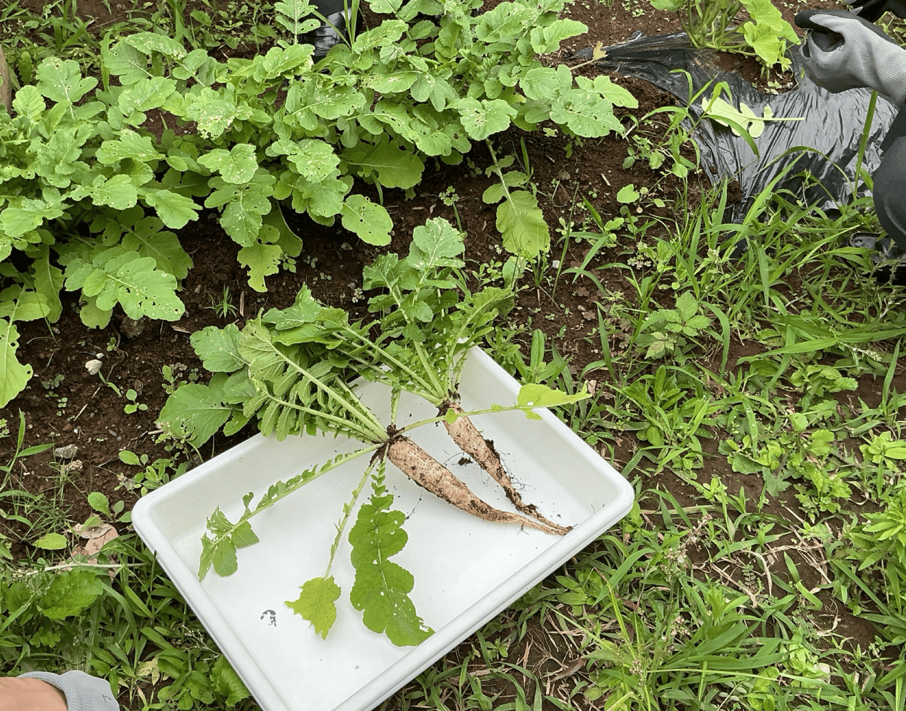
アブラナ目・アブラナ科・ダイコン属 — コンパクトな品種で辛味が強いです。
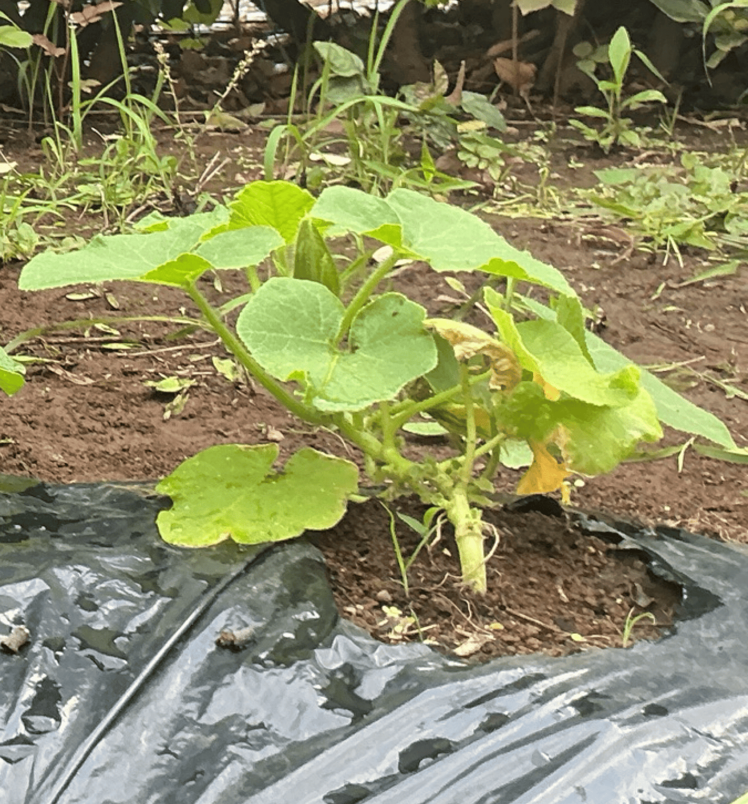
ウリ目・ウリ科・カボチャ属 — 現在栽培中のカボチャです。
部室での活動や観察の様子を紹介します。

部室での観察活動

データ収集と分析

自然観察

生き物の飼育管理